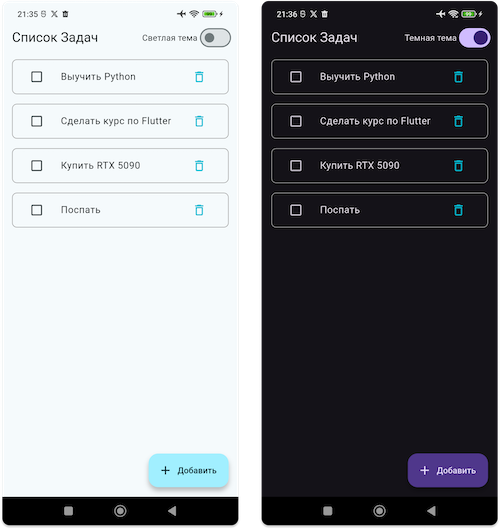
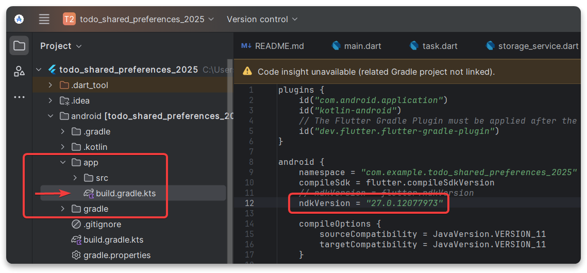
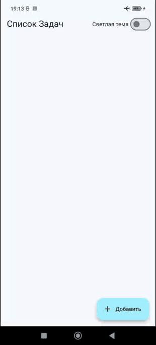

Локальное хранилище. SharedPreferences
Локальное хранилище
Скачаем себе проект по ссылке Скачать "Todo App"
У этого приложения есть существенный
недостаток!
Все добавленные задачи и выбранная цветовая тема исчезают при перезапуске приложения!
Так происходит потому, что все данные хранятся только в оперативной памяти во время работы приложения.
Для решения этой проблемы, данные нужно научиться сохранять в память устройства, в локальное хранилище.
Зачем нужно локальное хранилище?
Сохранение пользовательских данных: заметки, списки дел, всё что создаёт пользователь приложения.Запоминание настроек: выбора цветовой темы, язык, уведомления.Офлайн-режим: сохранить данные на устройстве, чтобы пользоваться им в отсутствии интернета и иметь возможность синхронизировать эти данные с сервером позже.
shared_preferences
Инструмент для сохранения и использования простых данных, например, небольшие списки или настройки.
Он хранит данные в виде пар Ключ → Значение
На этом занятии доработаем СПИСОК ЗАДАЧ
- Добавим простую архитектуру
MVVM - Добавим
Providerдля управления состоянием - Добавим
shared_preferencesдля сохранения задач и темы - Реализуем
удалениезадач

1. Подготовка
- Скачаем себе прошлый проект по ссылке
👉 Ссылка на репозиторий с кодом приложения Список Задач - Добавим в
pubspec.yamlзависимостей - Выполним в консоли команду
flutter pub add provider shared_preferencesФайл pubspec.yaml
dependencies:
flutter:
sdk: flutter
cupertino_icons: ^1.0.8
provider: ^6.1.5
shared_preferences: ^2.5.3
2. Новая структура проекта для архитектуры MVVM
Добавим новую структуру папок и файлов в директории lib
models- для моделей данныхviews- для виджетов экрановviewmodels- для вьюмоделей которые управляют экранамиservices- сервисы по работе с данными (локальное хранилище)
📦 lib/
├── 📂 models/
│ └──📄 task.dart
├── 📂 views/
│ └──📄 todo_screen.dart
├── 📂 viewmodels/
│ └──📄 todo_viewmodel.dart
├── 📂 services/
│ └──📄 storage_service.dart
└──📄 main.dart
3. Смена темы и сохранение настроек
Для начала добавим в приложение переключатель между тёмной и светлой темы и самое главное реализуем возможность сохранить эту настройку в память телефона.
Добавляем сервис для управлениями данными
Это будет отдельный класс отвечающий за чтение и запись в локальное
хранилище shared_preferences
Методы доступа к shared_preferences
- Получаем экземпляр
SharedPreferences.getInstance() - Сохраняем данные
setBool,setInt,setString,setStringList,... - Получаем
данные
getBool,getInt,getString,getStringList,...
В данном случае будет setBool('isDarkMode', false)
'isDarkMode'- Ключfalse- Значение
Файл services/storage_service.dart


import 'package:shared_preferences/shared_preferences.dart';
class StorageService {
// Значение ключа для сохранения настроек цветовой темы
static const themeKey = 'isDarkMode';
/// Сохранить значение цветовой темы
Future<void> saveThemeMode(bool isDarkMode) async {
try {
final prefs = await SharedPreferences.getInstance();
// Сохранить значение в SharedPreferences по ключу
await prefs.setBool(themeKey, isDarkMode);
} catch (e) {
throw Exception('Ошибка при сохранении темы: $e');
}
}
/// Получить значение сохранённой цветовой темы
Future<bool> getThemeMode() async {
try {
// Получить экземпляр SharedPreferences
final prefs = await SharedPreferences.getInstance();
// Получить значение сохранённой цветовой темы по ключу
return prefs.getBool(themeKey) ?? false;
} catch (e) {
throw Exception('Ошибка при загрузке темы: $e');
}
}
}
4. Добавляем ViewModel для управления экраном
ViewModel будет управлять состоянием и всей логикой
работы экрана. Она будет использовать StorageService для работы с данными в
локальном хранилище.
Внимательно читайте комментарии к коду!
Файл viewmodels/todo_viewmodel.dart
import 'package:flutter/material.dart';
import '../services/storage_service.dart';
class ToDoViewModel extends ChangeNotifier {
// Получаем доступ к сервису хранилища
final StorageService _storageService = StorageService();
bool _isDarkMode = false;
bool get isDarkMode => _isDarkMode;
/// Переключение цветовой темы
void toggleTheme() {
// Изменяем состояние
_isDarkMode = !_isDarkMode;
// Сохраняем значение в SharedPreferences
_storageService.saveThemeMode(_isDarkMode);
// Уведомляем слушателей, чтобы они перестраивались
notifyListeners();
}
}
5. Вёрстка Экрана ToDoScreen
Вся логика работы приложения вынесена в отдельные слои, теперь слой View будет
отвечать только за вёрстку UI
Внимательно читайте комментарии к коду!
Файл views/todo_screen.dart
import 'package:flutter/material.dart';
import 'package:provider/provider.dart';
import '../viewmodels/todo_viewmodel.dart';
class ToDoScreen extends StatelessWidget {
const ToDoScreen({super.key});
@override
Widget build(BuildContext context) {
// Получаем экземпляр ViewModel и подписываемся на изменения
final viewModel = context.watch<ToDoViewModel>();
return Scaffold(
appBar: AppBar(
title: const Text('Список Задач'),
actions: [
Center(
child: Text(viewModel.isDarkMode ? 'Темная тема' : 'Светлая тема'),
),
Switch(
// Используем ViewModel для управления состоянием переключателя
value: viewModel.isDarkMode,
onChanged: (_) => viewModel.toggleTheme(),
),
const SizedBox(width: 8),
],
),
body: ListView.builder(
// Пока что заглушка
itemCount: 5,
itemBuilder: (context, index) {
return ListTile(
leading: Checkbox(value: false, onChanged: (_) {}),
title: Text('Задача $index'),
);
},
),
floatingActionButton: FloatingActionButton.extended(
// Показать диалоговое окно
onPressed: () => _showAddTaskDialog(context),
label: const Text('Добавить'),
icon: const Icon(Icons.add),
),
);
}
/// Показать диалоговое окно для добавления задачи
void _showAddTaskDialog(BuildContext context) {
// Показываем диалоговое окно
showDialog(
context: context,
builder: (context) {
return AlertDialog(
title: const Text('Добавить задачу'),
content: TextField(
autofocus: true,
decoration: InputDecoration(hintText: "Введите текст задачи"),
),
actions: [
TextButton(
onPressed: () => Navigator.of(context).pop(),
child: const Text('Отмена'),
),
TextButton(
onPressed: () {
// TODO: Реализовать добавление задачи
},
child: const Text('Добавить'),
),
],
);
},
);
}
}
6. Собираем всё в main
Файл main.dart
import 'package:flutter/material.dart';
import 'package:provider/provider.dart';
import 'viewmodels/todo_viewmodel.dart';
import 'views/todo_screen.dart';
void main() {
runApp(
// Оборачиваем приложение в ChangeNotifierProvider
// Создаём экземпляр ViewModel и передаём вниз по дереву
ChangeNotifierProvider(
create: (context) => ToDoViewModel(),
child: const ToDoApp(),
),
);
}
class ToDoApp extends StatelessWidget {
const ToDoApp({super.key});
@override
Widget build(BuildContext context) {
// Используем Consumer
// MaterialApp будет перестраиваться при смене цветовой темы
return Consumer<ToDoViewModel>(
builder: (context, viewModel, child) {
return MaterialApp(
title: "Список Дел",
theme: ThemeData(
colorScheme: ColorScheme.fromSeed(seedColor: Colors.cyan),
brightness: Brightness.light,
),
darkTheme: ThemeData(
brightness: Brightness.dark,
),
// Используем ViewModel для управления состоянием темы
// В зависимости от isDarkMode, выбираем тёмную или светлую тему
themeMode: viewModel.isDarkMode ? ThemeMode.dark : ThemeMode.light,
debugShowCheckedModeBanner: false,
home: const ToDoScreen(),
);
},
);
}
}
Внимание!
Если при сборке приложения возникает ошибка
Your project is configured with Android NDK 26.3.11579264, but the following plugin(s) depend on a different Android NDK version:
- shared_preferences_android requires Android NDK 27.0.12077973
Fix this issue by using the highest Android NDK version (they are backward compatible).
android {
ndkVersion = "27.0.12077973"
...
}
Нужно зайти в конфиги Android и вручную прописать
версию NDK

7. Демонстрация работы приложения
- По нажатию на переключатель, меняется цветовая тема и название переключателя
- Если поменять цвет темы и полностью закрыть приложение, а потом снова его запустить, цвет выбранной темы сохранится
